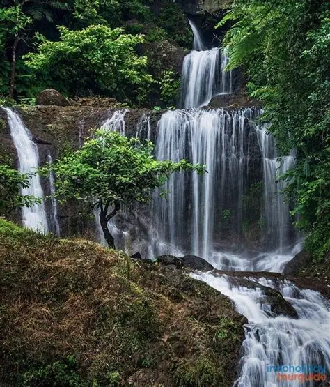

Curug Cigorobog adalah fenomena alam yang terbentuk dari proses erosi sungai yang melalui batuan vulkanik keras. Secara geologis, air terjun tiga tingkat ini merupakan bagian dari sistem aliran sungai yang membelah kawasan hutan di kaki pegunungan Sumedang. Sejarah penamaan Cigorobog berasal dari bahasa Sunda yang menggambarkan gemuruh air yang jatuh menyerupai suara bedil (senjata kuno). Selama puluhan tahun, tempat ini menjadi kawasan konservasi yang dijaga secara swadaya oleh masyarakat sekitar sebelum akhirnya dikelola sebagai destinasi wisata alam.
← Kembali ke Daftar